Since 1886,
on foot.
More than a century of climbs, huts, rescue and mountain culture: the history of the section in milestones.

Milestones
Alongside its activity in the mountains, the section has always organised slide shows, talks and debates, and recorded its life in many publications and in its yearbooks.
-
1886
On 11 April, at the Birraria Gambrinus in Bellinzona, the Club Alpino Ticinese is founded, in the centenary year of the first ascent of Mont Blanc by Jacques Balmat and Michel-Gabriel Paccard in 1786. Its first president is the lawyer Curzio Curti. Its aim: to visit, study and make known the mountains of the canton and the neighbouring regions.
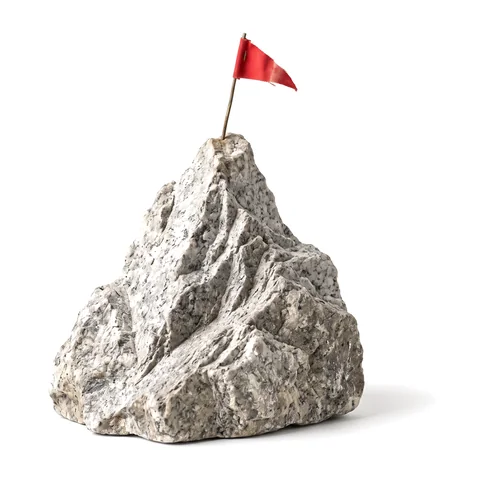
-
1887
On 20 March the club joins the Swiss Alpine Club as its Ticino section, based in Lugano.
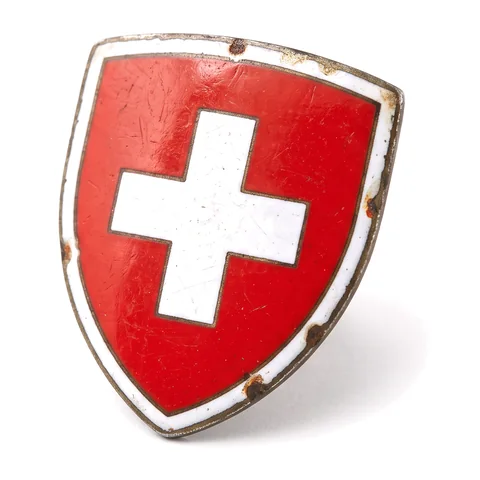
-
1911
Across the border, in Lanzo d’Intelvi, the section banner is inaugurated. A year later, on 11 August 1912, the section opens Capanna Campo Tencia at the head of Val Piumogna, below the peak of the same name: the first hut in the Ticino mountains.
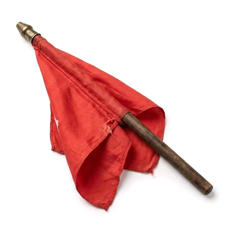
-
1913
The Lugano section of the Swiss Women’s Alpine Club is founded, chaired by Adelina Rossi-Baragiola.
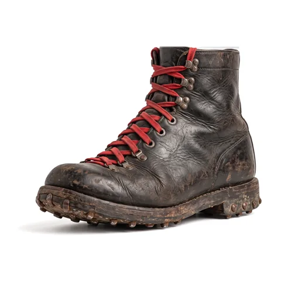
-
1918
In Leventina and Valle di Blenio, mountain rescue stations are set up in Faido, Airolo and Olivone: for the first time, anyone injured in the mountains can count on organised teams. Training the guides is the section’s task; appointing them is up to the cantonal government.
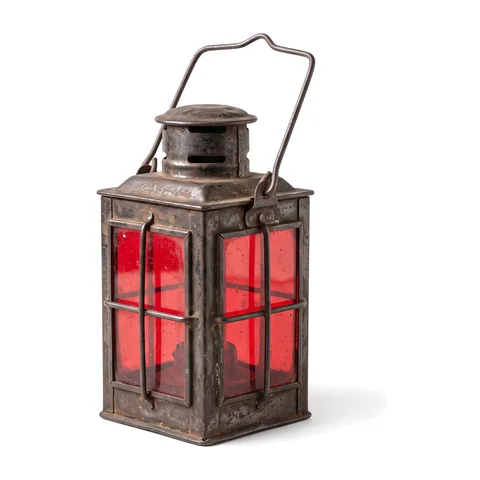
-
1930s
Rock climbing grows: Emilio Comici, the leading Italian alpinist of the day, is invited to the Denti della Vecchia, which become the section’s home crag; Riccardo Cassin trains there too. In 1932 Tita Calvi, Don Giugni and Aldo Balmelli open the north-east face of Piz Prevat; Bruno Primi “Stüva” becomes a guide and climbs great classics, from the Civetta to the Matterhorn. In 1935 Calvi and Balmelli run Ticino’s first ski school, at Alpe Musgatina.
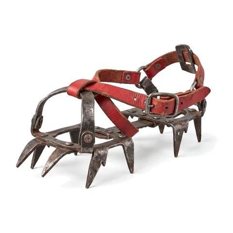
-
1936
The section turns fifty and celebrates with the first hut on Monte Bar: the women of Bidogno carry the building materials up in baskets on their backs, and on Sundays there are soon more than 300 skiers on the slopes. The same year the first members reach the central Himalaya, followed later by Lapland (1959), Huascarán (1977) and Pumori (1978).
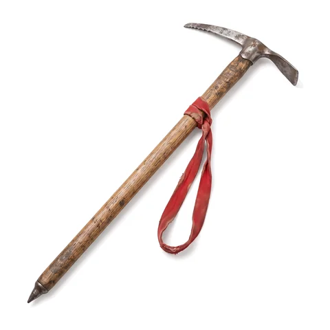
-
1940
The Seniors group is founded.
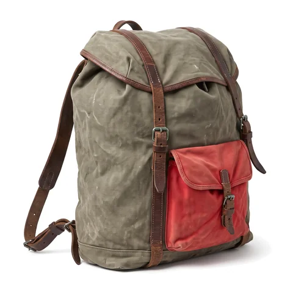
-
1960s
The OG youth group is founded and the Sottoceneri rescue team goes into service. In 1963 the climber Aldo Fontana brings new energy; in 1964 the Gruppo Scoiattoli is founded, which over the years opens and documents most of the routes on the Denti della Vecchia.
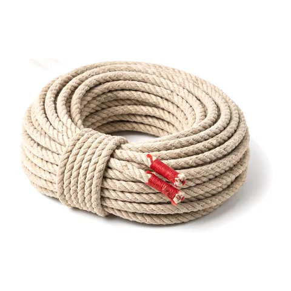
-
1980
The men’s and women’s sections merge, as they do across Switzerland: until then the Swiss Alpine Club was for men only, and women climbers had a club of their own. Behind it lies a difficult decade: on 22 August 1975 a fire destroys Capanna Campo Tencia, which is rebuilt in 1977 with a steel structure, innovative for its time, by the section’s architect Oscar Hofmann.
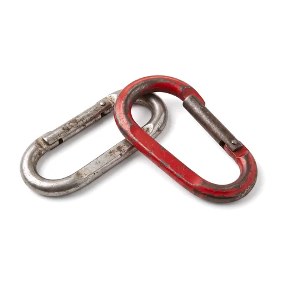
-
1982
First edition of the “mini week” for the youngest children.
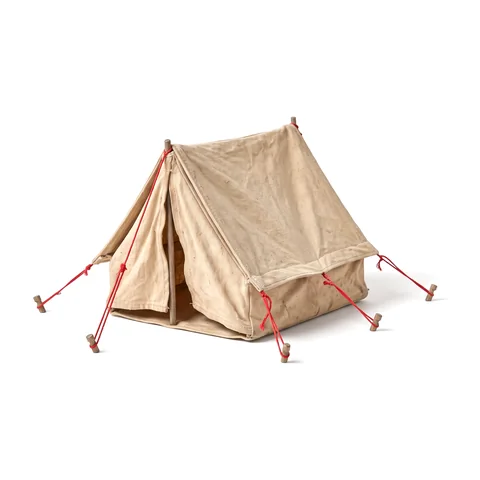
-
2003
In February 1999 a series of avalanches had destroyed the old Capanna Cristallina, built in 1939. The new hut, designed by the architects Nicola Baserga and Christian Mozzetti, goes up on the Cristallina Pass at 2575 m in just eight months of work over the summers of 2001 and 2002; it opens in December 2002 and is officially inaugurated in July 2003. It is the first modern hut of the SAC.
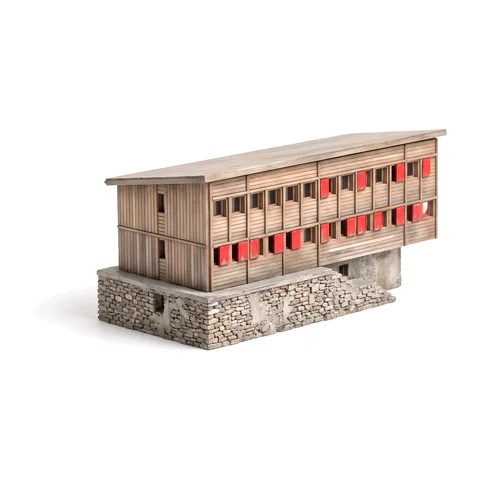
-
2016
Eighty years after the first hut, the new Capanna Monte Bar opens. The 2014 competition had been won, out of thirty entries, by “Barlume” by the architects Oliviero Piffaretti and Carlo Romano: a simple timber building around the hearth as a meeting place, planned with the municipality of Capriasca to benefit the whole region.
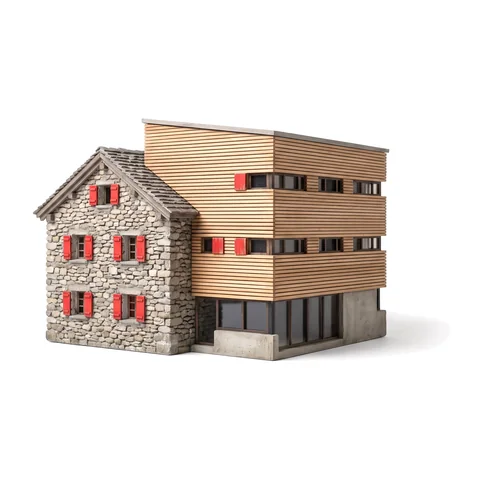